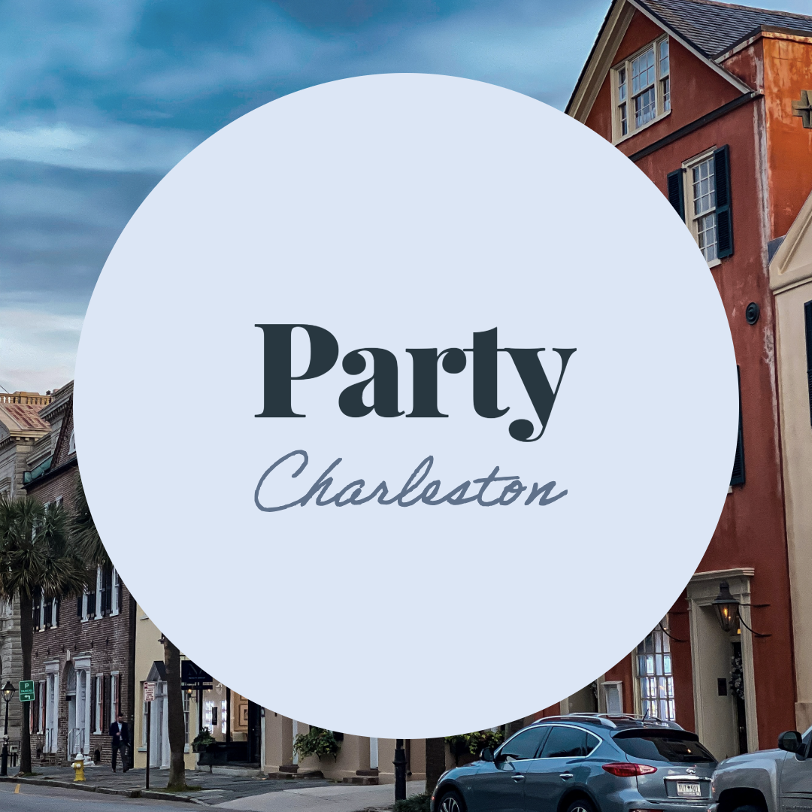
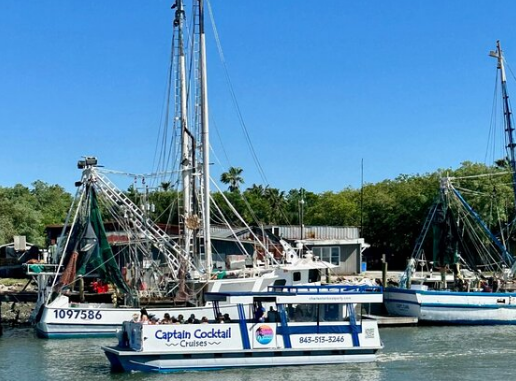
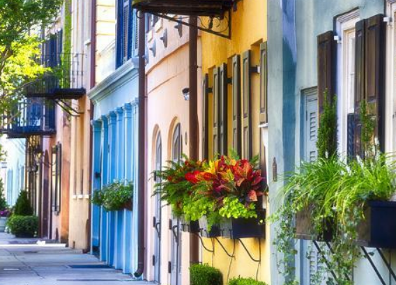
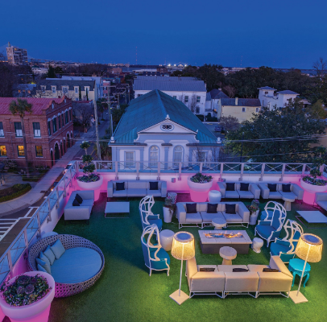
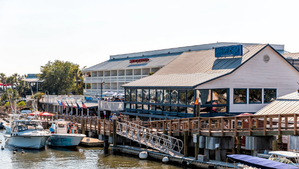

5 Best Adult Birthday Party Ideas in Charleston for Women
A more curated, Charleston-centered list for a stylish adult celebration.

Charleston Birthday Party Show - Private - Brunch Option

A birthday party show, even at brunch is one of the strongest adult birthday ideas in Charleston because it combines everything that works for a women-first celebration: unique outfit, easy group conversation, fun vibes, a reason for cocktails, and a epci start to the day. Whether on King Street is one of the best places to begin or elsewhere, because it naturally blends food, shopping, party, and walkability in one of the city’s most recognized downtown corridors.
Call or Text to Book
What makes this great is the surprise box is completely checked and a reason to get the funniest in the group together. Not everyone needs to attend the show party of the celebration just the playful and rowdy of the bunch. The price is great for the quality of of the event.
Charleston Harbor Cruise with Sunset Photos

If the birthday group wants something elevated and scenic, a Charleston Harbor cruise is one of the most memorable birthday party ideas for adults in Charleston. The harbor immediately gives the celebration that “special occasion” feeling, especially around golden hour when the city skyline, water, and bridge views all come together.
For women celebrating with close friends, a harbor cruise offers the mix of conversation, views, and photo moments that a simple dinner reservation cannot always deliver. It also feels distinctly Charleston. You are not just having a birthday party; you are celebrating on the water in one of South Carolina’s most iconic coastal settings. That local identity matters when you want birthday ideas in Charleston that feel rooted in the city rather than copied from a generic party guide.
Girls’ Spa Day Followed by Shopping in Downtown Charleston

Not every adult birthday party needs to start loud. For many women, a better plan is a birthday built around self-care, beauty, and time with friends. A spa-focused birthday paired with shopping in downtown Charleston creates a more relaxed but still upscale celebration. That is especially true if the group wants the day to feel polished, social, and easy to enjoy.
Charleston’s downtown atmosphere makes this idea work. You can move from a morning treatment into lunch, walk through the historic district, browse boutiques near King Street, and stop for dessert or champagne later in the day. It is one of the best Charleston birthday ideas for women who want to feel celebrated without turning the event into a loud nightlife-only plan.
Rooftop Cocktails and Dinner in the Historic District

For a more dressed-up birthday night, rooftop cocktails followed by dinner in downtown Charleston is still one of the strongest adult birthday party ideas in the city. The reason is simple: Charleston’s historic core already gives you the atmosphere. Add skyline views, candlelit dining, and a group of friends dressed for the occasion, and the birthday starts to feel cinematic without trying too hard.
This option works especially well for women celebrating milestone birthdays, girls’ weekends, or friend groups that want a fun but still sophisticated vibe. Upper King, the French Quarter, and nearby downtown areas give you flexibility to move from pre-dinner cocktails into a late dinner and then continue the night if you want. It is one of the easiest ways to create a birthday itinerary in Charleston that feels both feminine and adult.
Shem Creek Birthday Evening with Dinner, Drinks, and Water Views

If your group wants a coastal celebration without leaving the Charleston area, Shem Creek in Mount Pleasant is one of the best birthday ideas near downtown Charleston. The waterfront setting gives the party a breezy, social, Lowcountry energy that works beautifully for adult groups. It feels a little more relaxed than staying entirely in the historic district, but it still delivers the kind of views and atmosphere people want for a special day.
A Shem Creek birthday can include dinner, drinks, sunset photos, and a more laid-back group dynamic. For women who want something pretty, fun, and shareable without forcing a packed itinerary, this is a standout option. It also expands the Charleston birthday idea beyond one neighborhood while still keeping the celebration tied closely to a recognizable local destination.
Best Fit for Female-First Birthday Planning
These ideas work well because they match what many women actually look for in a birthday plan: atmosphere, aesthetics, flexibility, comfort, food, drinks, and places that photograph well. Instead of relying only on activity-based ideas, Charleston offers birthday settings that let the group enjoy the city itself.
That is what makes Charleston, SC such a strong market for adult birthday party ideas. The city’s identity — King Street, Charleston Harbor, historic downtown streets, rooftop dining, and nearby waterfront spots like Shem Creek — does half the work for you.